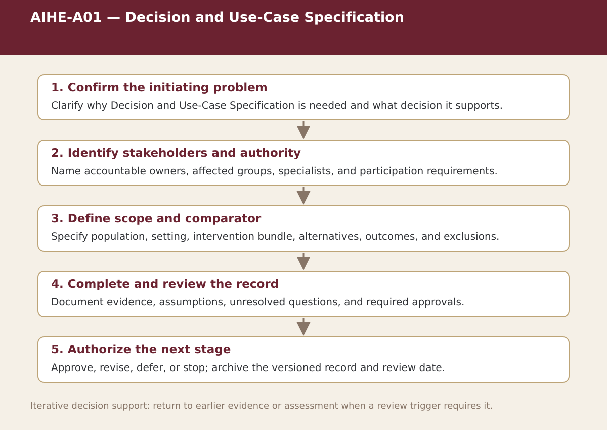

Core · Chapter 1
AIHE-A01 — Decision and Use-Case Specification
Define the service problem, full intervention, realistic comparators, outcomes, value mechanism, decision rule, and review cycle.

Process steps
| Step | Stage | Purpose | Required Input | Expected Output | Decision Or Gate |
|---|---|---|---|---|---|
| 1 | Confirm the initiating problem | Clarify why Decision and Use-Case Specification is needed and what decision it supports. | Local evidence and the prior approved step | Versioned record for: Confirm the initiating problem | Proceed, revise, escalate, restrict, or stop as appropriate |
| 2 | Identify stakeholders and authority | Name accountable owners, affected groups, specialists, and participation requirements. | Local evidence and the prior approved step | Versioned record for: Identify stakeholders and authority | Proceed, revise, escalate, restrict, or stop as appropriate |
| 3 | Define scope and comparator | Specify population, setting, intervention bundle, alternatives, outcomes, and exclusions. | Local evidence and the prior approved step | Versioned record for: Define scope and comparator | Proceed, revise, escalate, restrict, or stop as appropriate |
| 4 | Complete and review the record | Document evidence, assumptions, unresolved questions, and required approvals. | Local evidence and the prior approved step | Versioned record for: Complete and review the record | Proceed, revise, escalate, restrict, or stop as appropriate |
| 5 | Authorize the next stage | Approve, revise, defer, or stop; archive the versioned record and review date. | Local evidence and the prior approved step | Versioned record for: Authorize the next stage | Proceed, revise, escalate, restrict, or stop as appropriate |
Status. This process map is a navigation and decision-support aid. Adapt it to the relevant jurisdiction, institution, population, workflow, technology version, evidence cut-off, and accountable authority.